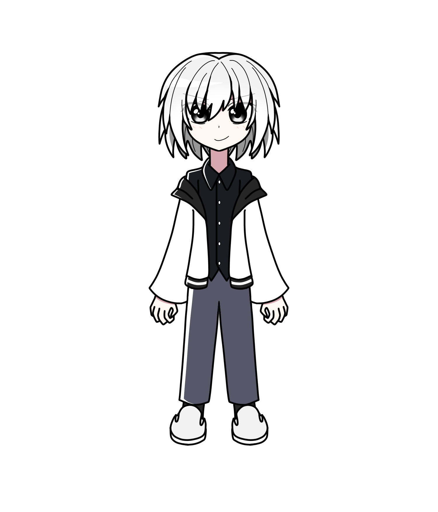

手代木 カイ
概要
本名は「手代木 快」
プロフィール
| 種族 | 人間 |
|---|---|
| 性別 | 男性 |
| 年齢 | |
| 誕生日 | |
| 身長 | 176cm |
| 血液型 | |
| 出身 | |
| イメージカラー | 白 |
| イメージCV |
人物像
外見
性格
利己的な性格で好戦的。
自分にとって障害に感じた相手には
容赦なく闘いを吹っ掛ける。
追い詰められれば追い詰められるほど
気分が高揚する。
ファニリシアをゲームのような世界だと思っており、
あらゆる脅威も、ゲームのバトルのようなものだと思えば
テンションが上がる。
一方、あくまでバトルとして勝つことを
好んでいる。
意味のない殺傷はあまり好きではない。
そのため、他者の殺害という判断を容易にする
りつの性格にドン引きすることも。
体力が他二人に比べ、ない （と言っても狭間とはどんぐりの背比べの差でしかないが）。